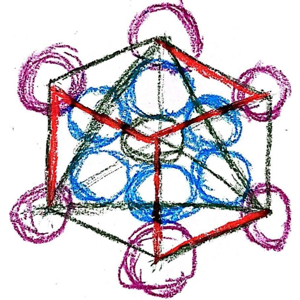
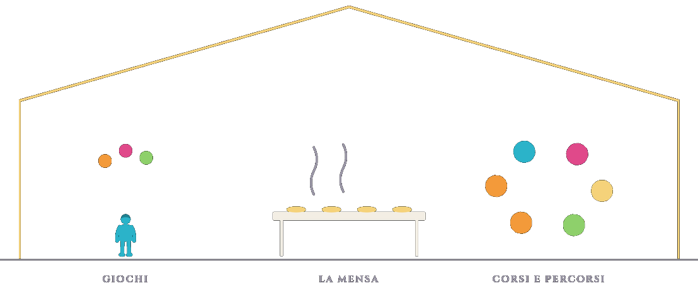
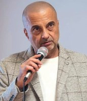
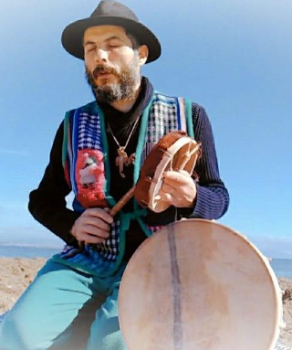
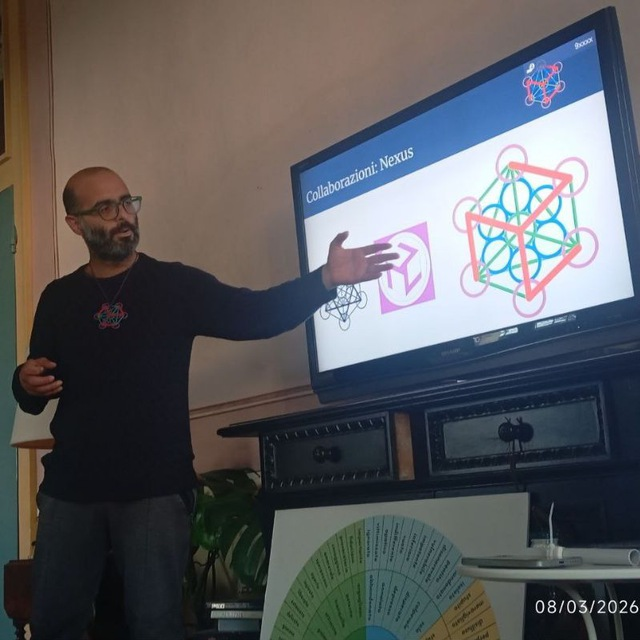

FelicitasMundiUna rete di vicinati in tutta la Sardegna: il cibo del territorio passa dal produttore alla comunità, entro 20 km di raggio dal centro di ritiro.

I punti di ritiro diventano spazi di comunità che ospitano incontri di aggregazione, attività culturali, laboratori di autoproduzione e progetti dedicati ai giovani.
Vi si svolgono inoltre attività terapeutiche, corsi, percorsi formativi e servizio mensa. Per attività terapeutiche si intendono le funzioni legate ai trattamenti e alla rigenerazione: centri, laboratori di produzione di rimedi, studi professionali.


Ivano Becciu Naiely · Maestro del Tamburo Medicina
L'intervento traccia un ponte tra storia antropologica, dinamiche geopolitiche contemporanee e la responsabilità spirituale del singolo all'interno della comunità.
Cerchio di radicamento e connessione con i tamburi
I tamburi medicina sono chiamati a riunirsi per questa occasione
Interverranno la dottoressa Maria Rosaria Randaccio, che parlerà dei diritti dei sardi a usufruire della Zona Franca Extradoganale, e Mariano Carta, presidente dell'Associazione Zona Franca Eleonora d'Arborea Oristano, che parlerà dello scopo dell'associazione. Presenta Marco Caddeo.
Promuove, nei territori della Sardegna, la connessione tra le famiglie che hanno scelto percorsi di educazione parentale e alternativa, e la costruzione di una rete tra educatori, famiglie e luoghi in natura.
I Nostri Lab al Festival
La mattina dalle 10.00 alle 13.00
Impariamo l'arte antica dell'intreccio sardo usando materiali naturali, stimolando pazienza, manualità fine e geometria geometrico-intuitiva.
Manipoliamo la terra per creare sfere di argilla e semi biologici, pronte da lanciare per far fiorire la biodiversità e colorare il territorio.
Il pomeriggio dalle 14.30 alle 18.00
Con l'uso sicuro di archetti e seghetti per il legno, i ragazzi sviluppano concentrazione, precisione e coordinazione dell'occhio e della mano, dando vita a forme uniche.
Un grande foglio bianco dove ognuno disegna una vignetta, scoprendo la forza del lavoro di squadra, della narrazione visiva e dell'espressione libera.
Uno spazio aperto per sperimentare palline, clave e piatti rotanti, dove l'errore diventa parte del divertimento e si allenano riflessi, costanza e autostima.

Riconosci il tuo talento e il tuo progetto-senso. Allena un'attenzione indomabile, la coerenza tra pensiero, parola e azione, e porta a terra la forza creativa. Poi fai il salto dal singolo al team: smetti di concentrare conoscenze e relazioni su una sola persona e affidale a un Cervello Digitale Evoluto che, insieme all'AI, ordina file, agende, mail e obiettivi e segue lo sviluppo della tua azienda e del tuo progetto.
Ingresso gratuito
Pranzo vegetariano alle 13:00 · Cena vegetariana ore 20:00
80 € 50 € per il Festival
La mattina dalle 10.00 alle 13.00 · il pomeriggio dalle 14.30 alle 18.00 · Area Educazione a cura dell'associazione Arghentu
WhatsApp · Telegram · mail · copia link